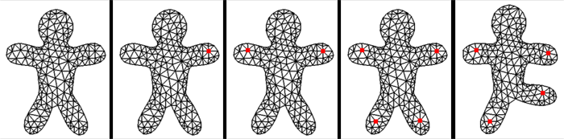

| As-Rigid-As-Possible 2D Shape Manipulation Demo |
Downloads: [Win32 Binaries] [Source]
| Details |
|
Deform2D is an interactive demo program which implements the As-Rigid-As-Possible Shape Manipulation technique described in: As-rigid-as-possible shape manipulation. Takeo Igarashi, Tomer Moscovich, John F. Hughes. ACM Transactions on Graphics, 24(3), July 2005, pp. 1134-1141. [Author's Project Page] [ACM DL] This simple GLUT application can be used to deform a 2D mesh based on a set of constraint points placed at the mesh vertices using the right mouse button. Once two constraints are placed, the linear equations defining the deformation are automatically precomputed. Then you can move the constraints using the left mouse button. In the example below 4 control points are placed (the red dots) and then moved around.  By default a square grid of triangles is generated. You can load other triangle meshes in .OBJ format (*) by pressing the 'f' key. Note that the mesh will be projected into the X/Y plane, and the view automatically scaled and translated. Also, if your mesh has lots of vertices (more than a few hundred), the pre-computation will take some time (the implementation here does not use sparse matrices). I have included the example mesh used above, named 'man.obj'. The source includes the WildMagic 2 library, of which a tiny part is used. This is an out-of-date version, see geometrictools.com for the most recent WildMagic library. Note that you can't just drop newer versions, because the namespace and some of the interfaces have changed (but it would not be a lot of work to update this code). UI controls: right mouse - set / remove control point (control points can only be placed at vertices) Source files: I wrote this code in 2006 (except for the GLUT interface, which I just hacked up so I wouldn't have to distribute the original GDI app). I don't really remember how it works, and I don't have time to provide developer support. Good luck! Included with the source is a Visual Studio 2005 project file. But the only windows-specific code is the open file dialog, so it should build on other systems (although I haven't tried it). You would have to either replace WildMagic2 or rebuild it for your target platform (it is available for Windows, Linux, and OS X). If you do port it, and are willing, please send me your package and I will post it here. Deform2D.cpp contains the GLUT and UI code Other than WildMagic2, this code is free as in beer - you can use it in any commercial product you like (WildMagic2 has a similar license). Math: These three Mathematica notebooks - transform.nb, scale.nb, assemble.nb - work out the terms to plug into the matrices. On first glance it is hard to imagine that anyone (including myself) would be able to make any sense of them, but who knows... (*) your .OBJ mesh must have face ('f') lines in the form vtx/tex/norm or vtx//norm. Some packages export just the vertex indices, which the OBJ loader can't handle. - Ryan Schmidt (rms@unknownroad.com) - Feb 2009 |